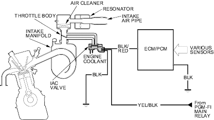

Fuel and Emissions Systems
System Descriptions (cont'd)
|
11-487 |
|
Idle Control System Diagram
The idle speed of the engine is controlled by the Idle Air Control (IAC) valve:
- After the engine starts, the IAC valve opens for a certain amount of time. The amount of air is increased to raise the idle speed.
- When the engine coolant temperature is low, the IAC valve is opened to obtain the proper fast idle speed. The amount of bypassed air is thus controlled in relation to engine coolant temperature.
Intake Air System Diagram
This system supplies air for engine needs. A resonator in the intake air pipe provides additional silencing as air is drawn into the system.
